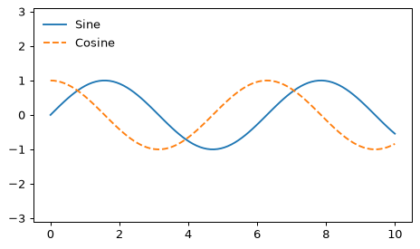
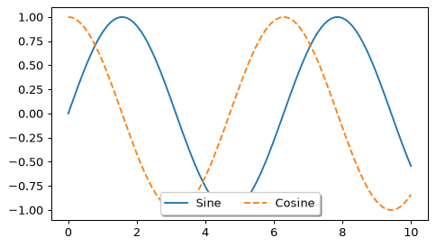
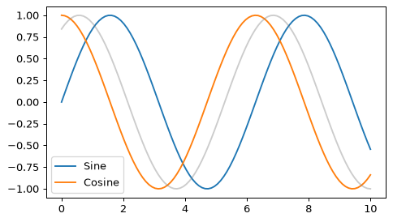
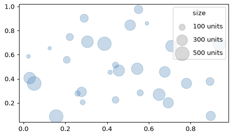
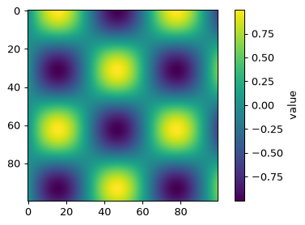
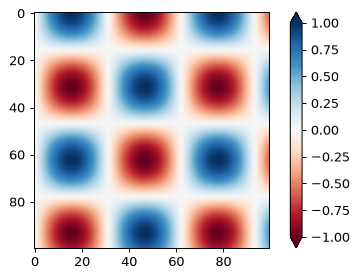

📖 対応する教科書：VanderPlas, Python Data Science Handbook（オンライン版）
- Handbook 4.06 Customizing Plot Legends
- Handbook 4.07 Customizing Colorbars
①
凡例を自由に配置する
loc・ncol・frameon
plt.legend()は、場所や見た目を変えられます。
x = np.linspace(0, 10, 100) fig, ax = plt.subplots() ax.plot(x, np.sin(x), label='Sine') ax.plot(x, np.cos(x), '--', label='Cosine') ax.axis('equal') ax.legend(loc='upper left', frameon=False)

fig, ax = plt.subplots() ax.plot(x, np.sin(x), label='Sine') ax.plot(x, np.cos(x), '--', label='Cosine') ax.legend(loc='lower center', ncol=2, frameon=True, shadow=True)

| 引数 | 役割 |
|---|---|
loc | 位置（'upper left'、'best'など） |
ncol | 列の数 |
frameon | 枠を付けるか |
fancybox / shadow | 角を丸く／影を付ける |
🍎 かんたん説明
凡例が線に重なって読みにくいときは、locで場所を変えるか、ncolで横に並べます。
💻 ミニ練習：凡例
凡例を右上に、枠なしで表示してください。
ax.legend(loc='upper right', frameon=False)
locとframeonを指定します。
②
凡例に載せる要素を選ぶ
一部だけ・点の大きさの凡例
線の一部だけを凡例に出したいときは、labelを付けた線だけが載る性質を使います。
fig, ax = plt.subplots() ax.plot(x, np.sin(x), label='Sine') ax.plot(x, np.cos(x), label='Cosine') ax.plot(x, np.sin(x + 1), color='gray', alpha=0.4) # label なし → 凡例に載らない ax.legend()

点の大きさが何を意味するかを凡例にするには、「見本の点」を描いて凡例に使う方法があります。
rng = np.random.RandomState(3) xs = rng.rand(30) ys = rng.rand(30) sz = 500 * rng.rand(30) plt.scatter(xs, ys, s=sz, alpha=0.3, color='steelblue') for s in [100, 300, 500]: plt.scatter([], [], s=s, color='gray', alpha=0.3, label=str(s) + ' units') plt.legend(scatterpoints=1, labelspacing=1, title='size')

🍎 かんたん説明
空のscatter([], [])は「凡例用の見本」を作る小ワザです。
💻 ミニ練習：label
2本のうち1本目だけが凡例に出るよう、labelを付けて描き、凡例を表示してください。
ax.plot([1, 2, 3], label='first') ax.plot([3, 2, 1]) ax.legend()
labelのない線は凡例に載りません。
③
カラーバーとカラーマップ
cmap の選び方
色で値を表すとき、色の並び（カラーマップ、cmap）が大切です。
xx = np.linspace(0, 10, 100) I = np.sin(xx) * np.cos(xx[:, np.newaxis]) fig, ax = plt.subplots() im = ax.imshow(I, cmap='viridis') fig.colorbar(im, label='value')

| 種類 | 使いどころ | 例 |
|---|---|---|
| 連続（sequential） | 小さい→大きい | viridis、Blues |
| 発散（diverging） | 0を中心に正負 | RdBu、coolwarm |
| 定性（qualitative） | カテゴリの区別 | tab10、Set1 |
⚠️ 虹色の
jetは、明るさが一様に変化せず、値の大小を誤解しやすいため、viridisなどを使うのが推奨です。白黒印刷でも読める色を選びましょう。fig, ax = plt.subplots() im = ax.imshow(I, cmap='RdBu') im.set_clim(-1, 1) # 色の範囲を固定 fig.colorbar(im, extend='both')

🍎 かんたん説明
順序のある値にはviridis、0が中心の正負にはRdBu、カテゴリにはtab10。
💻 ミニ練習：カラーバー
fig.colorbarで、画像imにカラーバーを付けてください。
fig.colorbar(im)
figのcolorbarに画像を渡します。
📝 確認クイズ
0 / 6
✏️ Questions are in English — answers are checked instantly.
Question 1
Which call places the legend in the upper left without a frame?
Question 2
What does ncol=2 do in legend()?
Question 3
A line was drawn without a label argument. What happens in the legend?
Question 4
Which kind of colormap fits data that is centred on zero with positive and negative values?
Question 5
Why is jet discouraged as a default colormap?
Question 6
How do you add a colorbar for an image im on the figure fig?